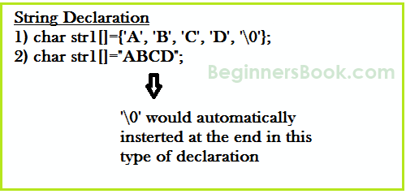
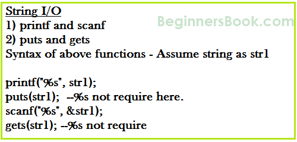
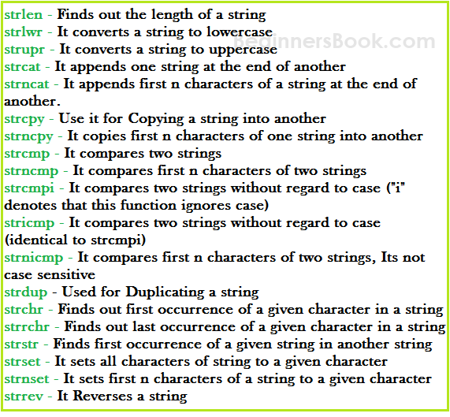

String is an array of characters. In this guide, we learn how to declare strings, how to work with strings in C programming and how to use the pre-defined string handling functions.
We will see how to compare two strings, concatenate strings, copy one string to another & perform various string manipulation operations. We can perform such operations using the pre-defined functions of “string.h” header file. In order to use these string functions you must include string.h file in your C program.
String Declaration

Method 1:
char address[]={'T', 'E', 'X', 'A', 'S', '\0'};
Method 2: The above string can also be defined as –
char address[]="TEXAS";
In the above declaration NULL character (\0) will automatically be inserted at the end of the string.
What is NULL Char “\0”?
'\0' represents the end of the string. It is also referred as String terminator & Null Character.
String I/O in C programming

Read & write Strings in C using Printf() and Scanf() functions
#include <stdio.h>
#include <string.h>
int main()
{
/* String Declaration*/
char nickname[20];
printf("Enter your Nick name:");
/* I am reading the input string and storing it in nickname
* Array name alone works as a base address of array so
* we can use nickname instead of &nickname here
*/
scanf("%s", nickname);
/*Displaying String*/
printf("%s",nickname);
return 0;
}
Output:
Enter your Nick name:Negan Negan
Note: %s format specifier is used for strings input/output
Read & Write Strings in C using gets() and puts() functions
#include <stdio.h>
#include <string.h>
int main()
{
/* String Declaration*/
char nickname[20];
/* Console display using puts */
puts("Enter your Nick name:");
/*Input using gets*/
gets(nickname);
puts(nickname);
return 0;
}
C – String functions

C String function – strlen
Syntax:
size_t strlen(const char *str)
size_t represents unsigned short
It returns the length of the string without including end character (terminating char ‘\0’).
Example of strlen:
#include <stdio.h>
#include <string.h>
int main()
{
char str1[20] = "BeginnersBook";
printf("Length of string str1: %d", strlen(str1));
return 0;
}
Output:
Length of string str1: 13
strlen vs sizeof
strlen returns you the length of the string stored in array, however sizeof returns the total allocated size assigned to the array. So if I consider the above example again then the following statements would return the below values.
strlen(str1) returned value 13.
sizeof(str1) would return value 20 as the array size is 20 (see the first statement in main function).
C String function – strnlen
Syntax:
size_t strnlen(const char *str, size_t maxlen)
size_t represents unsigned short
It returns length of the string if it is less than the value specified for maxlen (maximum length) otherwise it returns maxlen value.
Example of strnlen:
#include <stdio.h>
#include <string.h>
int main()
{
char str1[20] = "BeginnersBook";
printf("Length of string str1 when maxlen is 30: %d", strnlen(str1, 30));
printf("Length of string str1 when maxlen is 10: %d", strnlen(str1, 10));
return 0;
}
Output:
Length of string str1 when maxlen is 30: 13
Length of string str1 when maxlen is 10: 10
Have you noticed the output of second printf statement, even though the string length was 13 it returned only 10 because the maxlen was 10.
C String function – strcmp
int strcmp(const char *str1, const char *str2)
It compares the two strings and returns an integer value. If both the strings are same (equal) then this function would return 0 otherwise it may return a negative or positive value based on the comparison.
If string1 < string2 OR string1 is a substring of string2 then it would result in a negative value. If string1 > string2 then it would return positive value.
If string1 == string2 then you would get 0(zero) when you use this function for compare strings.
Example of strcmp:
#include <stdio.h>
#include <string.h>
int main()
{
char s1[20] = "BeginnersBook";
char s2[20] = "BeginnersBook.COM";
if (strcmp(s1, s2) ==0)
{
printf("string 1 and string 2 are equal");
}else
{
printf("string 1 and 2 are different");
}
return 0;
}
Output:
string 1 and 2 are different
C String function – strncmp
int strncmp(const char *str1, const char *str2, size_t n)
size_t is for unassigned short
It compares both the string till n characters or in other words it compares first n characters of both the strings.
Example of strncmp:
#include <stdio.h>
#include <string.h>
int main()
{
char s1[20] = "BeginnersBook";
char s2[20] = "BeginnersBook.COM";
/* below it is comparing first 8 characters of s1 and s2*/
if (strncmp(s1, s2, 8) ==0)
{
printf("string 1 and string 2 are equal");
}else
{
printf("string 1 and 2 are different");
}
return 0;
}
Output:
string1 and string 2 are equal
C String function – strcat
char *strcat(char *str1, char *str2)
It concatenates two strings and returns the concatenated string.
Example of strcat:
#include <stdio.h>
#include <string.h>
int main()
{
char s1[10] = "Hello";
char s2[10] = "World";
strcat(s1,s2);
printf("Output string after concatenation: %s", s1);
return 0;
}
Output:
Output string after concatenation: HelloWorld
C String function – strncat
char *strncat(char *str1, char *str2, int n)
It concatenates n characters of str2 to string str1. A terminator char (‘\0’) will always be appended at the end of the concatenated string.
Example of strncat:
#include <stdio.h>
#include <string.h>
int main()
{
char s1[10] = "Hello";
char s2[10] = "World";
strncat(s1,s2, 3);
printf("Concatenation using strncat: %s", s1);
return 0;
}
Output:
Concatenation using strncat: HelloWor
C String function – strcpy
char *strcpy( char *str1, char *str2)
It copies the string str2 into string str1, including the end character (terminator char ‘\0’).
Example of strcpy:
#include <stdio.h>
#include <string.h>
int main()
{
char s1[30] = "string 1";
char s2[30] = "string 2 : I’m gonna copied into s1";
/* this function has copied s2 into s1*/
strcpy(s1,s2);
printf("String s1 is: %s", s1);
return 0;
}
Output:
String s1 is: string 2: I’m gonna copied into s1
C String function – strncpy
char *strncpy( char *str1, char *str2, size_t n)
size_t is unassigned short and n is a number.
Case1: If length of str2 > n then it just copies first n characters of str2 into str1.
Case2: If length of str2 < n then it copies all the characters of str2 into str1 and appends several terminator chars(‘\0’) to accumulate the length of str1 to make it n.
Example of strncpy:
#include <stdio.h>
#include <string.h>
int main()
{
char first[30] = "string 1";
char second[30] = "string 2: I’m using strncpy now";
/* this function has copied first 10 chars of s2 into s1*/
strncpy(s1,s2, 12);
printf("String s1 is: %s", s1);
return 0;
}
Output:
String s1 is: string 2: I’m
C String function – strchr
char *strchr(char *str, int ch)
It searches string str for character ch (you may be wondering that in above definition I have given data type of ch as int, don’t worry I didn’t make any mistake it should be int only. The thing is when we give any character while using strchr then it internally gets converted into integer for better searching.
Example of strchr:
#include <stdio.h>
#include <string.h>
int main()
{
char mystr[30] = "I’m an example of function strchr";
printf ("%s", strchr(mystr, 'f'));
return 0;
}
Output:
f function strchr
C String function – Strrchr
char *strrchr(char *str, int ch)
It is similar to the function strchr, the only difference is that it searches the string in reverse order, now you would have understood why we have extra r in strrchr, yes you guessed it correct, it is for reverse only.
Now let’s take the same above example:
#include <stdio.h>
#include <string.h>
int main()
{
char mystr[30] = "I’m an example of function strchr";
printf ("%s", strrchr(mystr, 'f'));
return 0;
}
Output:
function strchr
Why output is different than strchr? It is because it started searching from the end of the string and found the first ‘f’ in function instead of ‘of’.
C String function – strstr
char *strstr(char *str, char *srch_term)
It is similar to strchr, except that it searches for string srch_term instead of a single char.
Example of strstr:
#include <stdio.h>
#include <string.h>
int main()
{
char inputstr[70] = "String Function in C at BeginnersBook.COM";
printf ("Output string is: %s", strstr(inputstr, 'Begi'));
return 0;
}
Output:
Output string is: BeginnersBook.COM
You can also use this function in place of strchr as you are allowed to give single char also in place of search_term string.
Explanation of every function is very clear and described in a easy way. its very good for understanding practical examples for students /beginners.Its humble request to explain more string functions in the article.
The first program has an error. You should not call scanf with &nickname as an argument, since nicknama is already an address. This is also pointed out by the compiler
string.c:11:5: warning: format ‘%s’ expects argument of type ‘char *’, but argument 2 has type ‘char (*)[20]’ [-Wformat=]
scanf(“%s”, &nickname);
^
Though it works, it is nevertheless a bad practice.